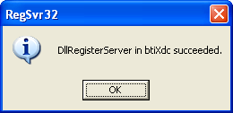

| package xdc.tools.configuro.ccs |
|
Command-line configuration tool adapter for Code Composer Studio
| XDCspec declarations | sourced in xdc/tools/configuro/ccs/package.xdc |
requires xdc.tools.configuro;
package xdc.tools.configuro.ccs [1, 0, 0, 0] {
module Main;
// Command-line configuration tool adapter for Code Composer Studio
}
INSTALLING_ON_WINDOWS
The XDC interface to Code Composer Studio requires some Windows registry
entries for correct operation. By default the XDC product Windows installer
takes care of this transparently to the user. You need only read this
section if you have installed or upgraded the XDC product on Windows without
having used the installer, for example if you are accessing XDC from a
shared network drive.
To update the required registry entries, do the following steps:
- open a Windows command window, for example by typing cmd from the "Run..." menu item located in the Windows "Start" menu.
- type cd %XDCROOT%
- type cd packages\xdc\tools\configuro\ccs
- type regsvr32 btiXdc
- click OK on the dialog box:

If you have not installed XDC using the installer, it is possible that you
also do not have an %XDCROOT% environment variable. In this case in step
2 above, cd to your own XDC product installation directory.
generated on Thu, 25 Feb 2010 19:25:10 GMT